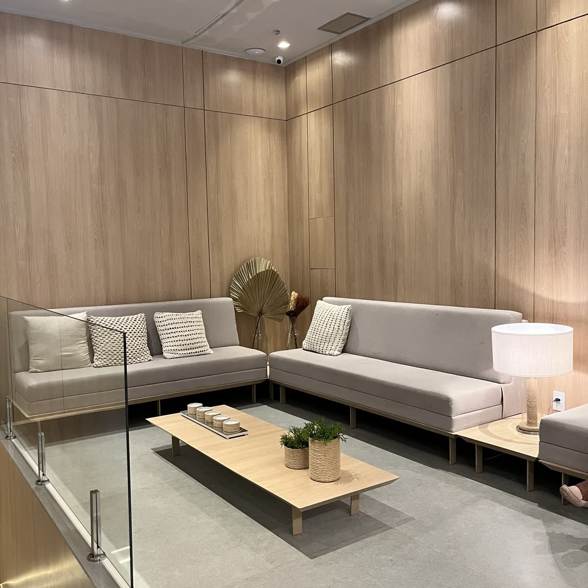
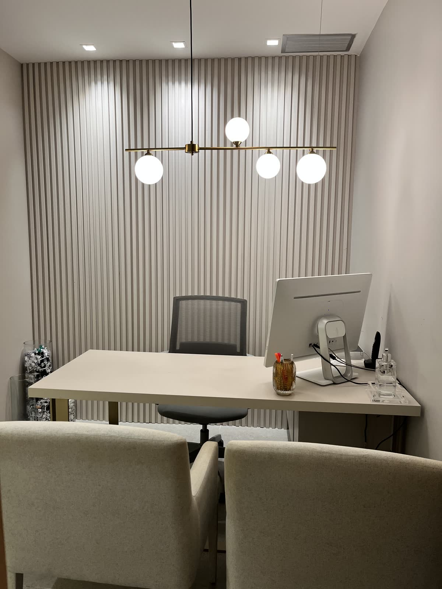

Diagnóstico preciso
Exames capilares detalhados, investigação clínica completa e, se necessário, exames de laboratório para entender a origem do problema.
A Dra. Luíza Venezia é médica com atuação em saúde capilar. Ela lidera o Núcleo de Tricologia da Heal Institute, em Salvador, e cuida de queda de cabelo, fios fracos e problemas do couro cabeludo.
Queda acentuada por mais de três semanas, falhas ou histórico de calvície na família.
Queda de cabeloCouro cabeludoA pele que produz cada fio também precisa de cuidado.
Couro cabeludoTratamentoDo diagnóstico à manutenção, com indicação sempre individual.
Tratamentos“Porque preservar o resultado também faz parte do tratamento.” É assim que a Dra. Luíza descreve o caminho de cada paciente.
Exames capilares detalhados, investigação clínica completa e, se necessário, exames de laboratório para entender a origem do problema.
Um plano de tratamento para cada paciente, que pode combinar terapias para fortalecer os fios.
Depois de uma evolução satisfatória, o acompanhamento continua para manter o que foi conquistado.
“Cuidar do cabelo vai muito além de disfarçar falhas ou buscar novos fios. É entender o que está acontecendo e agir enquanto há tempo.”
A Dra. Luíza lidera o núcleo dedicado à saúde capilar e à regeneração dos fios, com abordagem integrativa e suporte nutricional e hormonal.


Av. Antônio Carlos Magalhães, 1298. Atendimento presencial e online.
Conhecer a estruturaTrechos das publicações dela no Instagram, @draluizavenezia.
Um tratamento bem feito não termina quando os resultados aparecem. Ele começa com um diagnóstico preciso, segue com uma estratégia individualizada e, depois de uma evolução satisfatória, entra na fase de manutenção.Ver no Instagram →Lavar o cabelo
O problema não é ficar três dias sem lavar o cabelo. O problema é deixar três dias de sujeira acumulando sobre a pele que produz cada fio do seu cabelo.Ver no Instagram →Mulheres jovens
O afinamento e a perda de densidade capilar em mulheres jovens estão sendo cada vez mais normalizados, mas isso não significa que devam ser ignorados.Ver no Instagram →Pós-parto
A queda capilar pode até ser uma fase do pós-parto, mas cuidar dos seus fios não precisa ficar para depois.Ver no Instagram →
Desde o primeiro atendimento, ela foi super atenciosa, detalhista e explicou cada passo do meu tratamento capilar com muita paciência.
Profissional excelente, muita propriedade e domínio sobre o assunto. O paciente se sente seguro e sabe que pode confiar.
Extremamente atenciosa e competente! Tem todo o conhecimento médico necessário para cuidar da nossa saúde capilar e faz tudo com muito amor.
Médica atenciosa que de fato ouve suas necessidades, responde as mensagens, além de promover um tratamento que condiz com o contexto econômico do paciente.
Desde a chegada na clínica, todo o cuidado, avaliação, explicação e acompanhamento dado por ela me deixam segura e tranquila pra seguir com todo o processo do tratamento.
Uma excelente profissional, sempre atenciosa nos detalhes, muito bem informada, tirando todas as dúvidas que surgem do paciente.
Cuidadosa e super atenciosa com seus pacientes, amei e indico para todos.
Heal Institute · Shopping CidadeAv. Antônio Carlos Magalhães, 1298 · Salvador · BA
@draluizaveneziaQuando a queda dura mais de três semanas, quando surgem falhas ou áreas mais ralas, quando há descamação, coceira ou dor no couro cabeludo, ou quando há calvície precoce na família.
Não. A indicação do tratamento é individual e depende de uma avaliação médica.
Sim. O Núcleo de Tricologia da Heal Institute atende presencialmente e online.
Pelo WhatsApp (71) 98188-3467. A equipe informa os horários disponíveis.
Consulta na Heal Institute ou online.